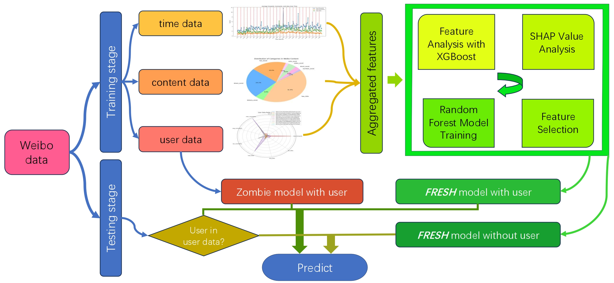
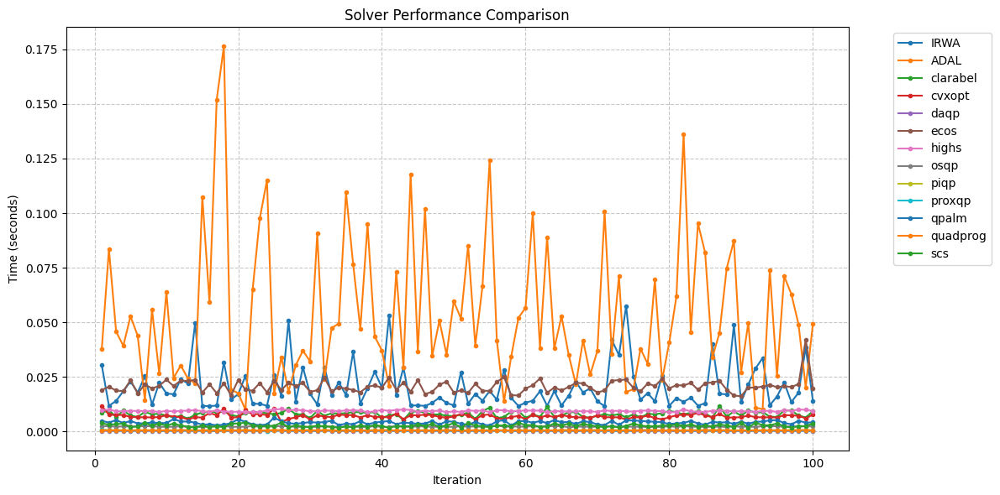

Projects
A collection of academic and personal projects I've worked on, showcasing my skills and interests.
Technical Projects

Predicting the interactions of Weibo
November 2024 - January 2025
A comprehensive analysis and predictive modeling framework for social media engagement on Sina Weibo. Our system, FRESH (Feature Random Forest Explained by SHAP Hyperboost), achieved:
- 31.51% accuracy rate on weighted evaluation metric
- Ranked 7th in Tianchi platform challenge
- 57% improvement over baseline model
- Developed a four-category user classification system (Zombie, Most Zombie, Likely Zombie, and Active Users)
- Improved prediction accuracy from 20.08% to 28.5% (25.81% increase)
Python
XGBoost
Random Forest
Data Analysis
View Project Details

Advised Method for Quadratic Programming
December 2024 - January 2025
Comprehensive evaluation and improvement of quadratic programming solvers for optimization problems.
- Reviewed 23 quadratic programming solvers developed over the last 20 years
- Tested solvers against 100 independent problem instances of 100 variables each
- Improved the IRWA algorithm with dual penalty parameters, M1, M2, for different types of constraints
- Achieved 1.5x convergence improvement against standard implementation
- Compared 11 state-of-the-art solvers, analyzing performance trade-offs between commercial and custom implementations
MATLAB
Python
Optimization
Algorithm Development
View Project Report
Humanities & Art Projects
Andy Warhol: A Case Study
An in-depth examination of Andy Warhol's artistic career through systematic review and analysis. The study explores five distinct periods:
- Exploration of images (1928-1949)
- Commercial images (1949-1962)
- Pop images (1962-1968)
- Experimental films (1963-1968)
- Commercial films and return to images (1968-1987)
Art History
Cultural Analysis
Research Paper
View Project Details
Resistance and Discipline under Patriarchy: The Awakening and Dissolution of Lady Macbeth's Subjectivity
A literary analysis examining the complex character of Lady Macbeth through the lens of feminist theory and patriarchal society.
This study explores:
- Character development within the context of gender roles in Shakespearean tragedy
- The intersection of power, gender, and psychology in Lady Macbeth's journey
- Feminist literary criticism applied to classic dramatic works
Literary Analysis
Feminist Theory
Shakespeare Studies
View Project Details